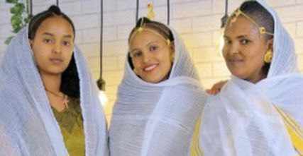

Family
Our journey began with a simple dream: to create a home filled with joy and warmth. As parents, we were determined to foster an environment where our children could explore their passions and feel supported in every endeavor. From the moment our first child arrived, our lives transformed into a beautiful whirlwind of discovery.

Work Experience
I have three years of experience as a tutor, which I began in 12th grade. During this time, I have honed my skills in teaching and mentoring, helping students understand complex concepts and succeed academically. This experience has not only strengthened my communication skills but also deepened my passion for education and technology.

Education journey
I began my educational journey at Bole Community School, where I laid the foundation for my academic pursuits. Following elementary school, I continued my studies at Bole Community for high school, where I developed a strong interest in technology and problem-solving. My hard work and dedication paid off when I successfully passed the entrance exam for university, leading me to pursue a degree in software engineering.